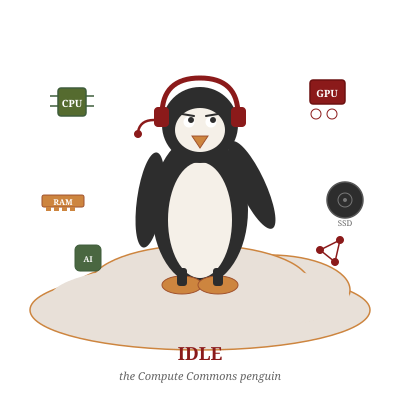

The Future of Personal Computing

A public-benefit distributed computing platform that coordinates underutilized storage, CPU, RAM, and GPU resources into a shared infrastructure layer — owned and governed by its community. Not a corporation. Not a startup. A commons.
Read the DeclarationPowered by SearXNG · Open source · No tracking · No ads
The Linux community won the most consequential technology war in history. Every supercomputer. Every cloud platform. Every AI training run. Android. The International Space Station. Smart TVs. Streaming devices. The kernel they wrote for free powers trillions of dollars in infrastructure.
Red Hat sold the support. IBM bought Red Hat for $34 billion. Google absorbed Linux into Android and Chrome OS. Microsoft — the company whose CEO called Linux "a cancer" in 2001 — now makes more money from Linux than any Linux company ever has, by running it inside Azure.
The community wrote the code. The corporations collected the check. And the pattern is about to repeat.
Every device is becoming a terminal. Chrome OS is already there — a browser with a login screen. Windows 365 runs your desktop in Microsoft's data center. Apple tightens the integration between device and iCloud with every release.
When that transition completes, the device in your hands is a screen that connects to someone else's computer. You own nothing. You compute at their pleasure, on their terms, subject to their surveillance, their pricing, and their content policies.
If the Linux community does not build a community-owned compute layer now, it will happen anyway — but you will pay for the privilege while having no data security and no privacy.
Every machine that connects to The Compute Commons is both a consumer and a contributor. A school's Chromebook fleet that accesses storage during class contributes idle CPU cycles overnight. A nonprofit's desktops contribute processing power on evenings and weekends. A developer's workstation contributes RAM and storage while the developer sleeps.
The more machines on the network, the more powerful it becomes. The more powerful it becomes, the more attractive it is. The more attractive it is, the more machines join. This is a flywheel, not a grant program.
Any operating system. Any distro. Any hardware vintage. All welcome. The person running a half-working custom kernel at 4 AM is exactly the person The Compute Commons is for.
Ulysses Isa
JD · Former Senate Chief of Staff
I am not a kernel developer. I have never submitted a patch to the Linux source tree. I am a lawyer and a former Senate Chief of Staff who came to Linux out of necessity and stubbornness — old hardware that the manufacturers abandoned, and a refusal to pay for the privilege of being surveilled.
I have spent thirty years watching what happens to things that people build for free. Someone else packages them. Someone else sells them. Someone else gets the check. The Compute Commons is my attempt to do something about that — not as a technologist, but as someone who knows how institutions work, how power consolidates, and how communities lose control of the things they created.
I expect to hand this to a community that is smarter than me, more technically capable than me, and more stubborn than me — and watch them do what they have always done: make it work despite every reason it should not.
30 pages. The political argument, the technical architecture, the growth model, the community pitch, honest risks, and a phased roadmap. Seven conceptual diagrams. No promises that can't be kept.
View & Download the PDFVersion 2.0 · May 2026 · Free to share and distribute in its entirety